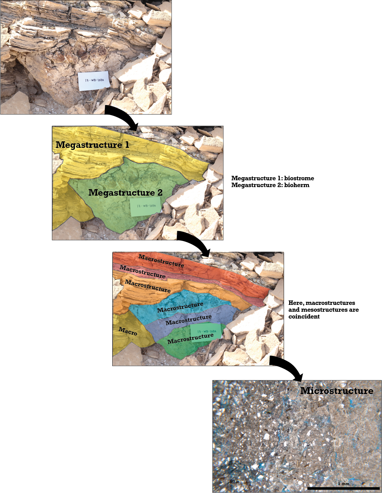

Help using the database
The Hierarchy of Microbialite Traits
The Handbook for the Study of Microbialites (Awramik and Grey, 2020) uses a hierarchical structure to describe microbialites in the rock record. This structure emphasizes the multiscale nature of microbialite sedimentary structures and allows for a detailed, non-genetic description that encompasses all scales of observation.
